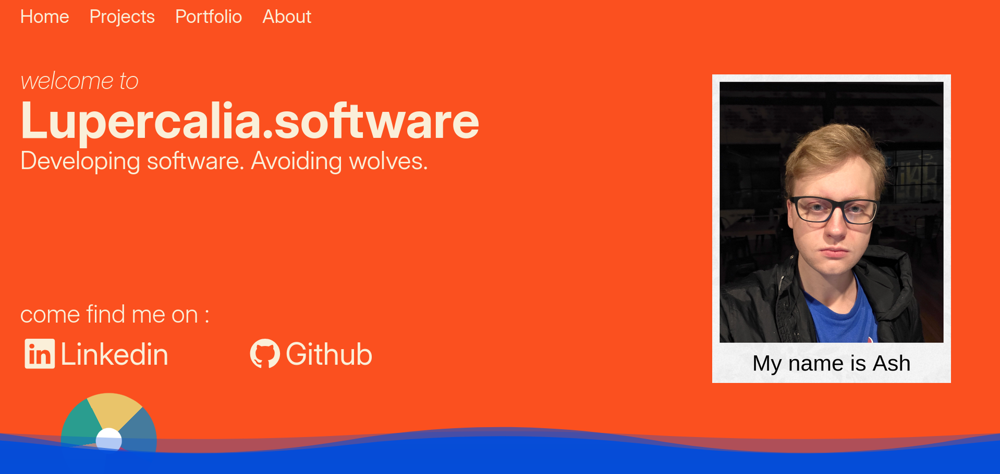
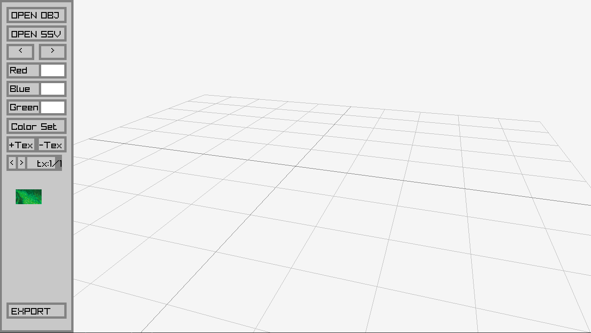
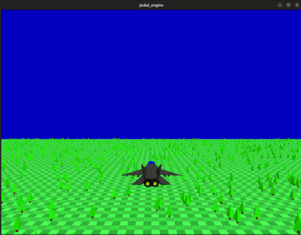
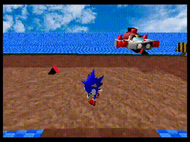
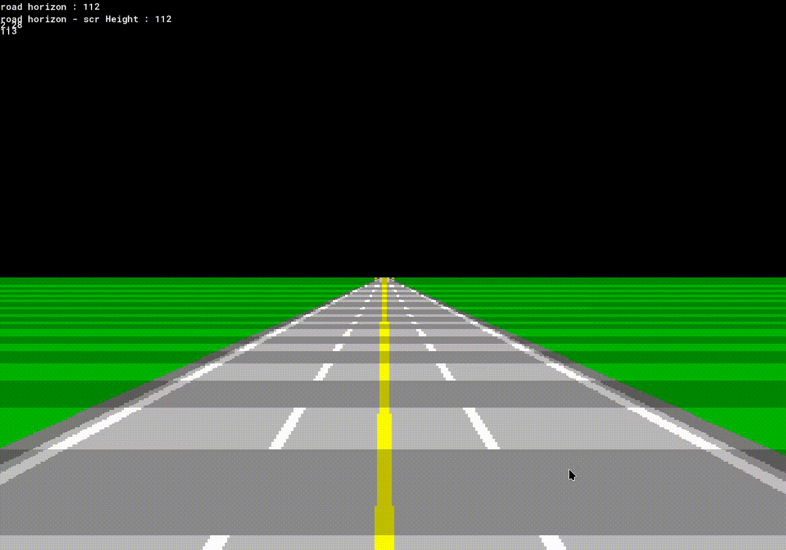

A highlight reel of my public projects!
sadly I did lose access to my old github, hence the separate githubs.
This is my latest project, a personal website to showcase my abilities, both at web design but also my professional history and projects
Languages used : Javascript, HTML, and CSS | Source


SSV is a tool designed to aid game developers in putting their models on retro consoles, such as the PS1 and Sega Saturn. It works by taking keyframes of model animations and converting them into compressed render-table models that use Fixed Point numbers instead of using floating point decimal values, this is important as embedded systems generally do not run floating point calculations well unless they have an FPU built in.
Languages used : C (Embedded runtime | Source), C++ (Converter | Source)
the Jackal Engine was made as a learning exercise so that I could get experience working with shaders and openGL, it supports both a 3D and 2D mode and is quite fun to make games with if you like more control over your engine.
Languages used : C++, C and GLSL | Source


Sonic Ringworlds was a team project between myself, an artist and several sound engineers for the Saturn Games Expo competition. It was a tough project to put together that went through many iterations over the years, it is more of a technical demo for the sega saturn than an actual game but I find it was a very fun project to work on.
Languages used : C, SH2 Assembly | Source
This is an active side project in which I'm using GML to replicate the road rendering technique of classic arcade games like Outrun, Afterburner and space harrier. alongside other graphical effects that have been lost to history.
Languages used : C++, GML | Source not public (yet)
